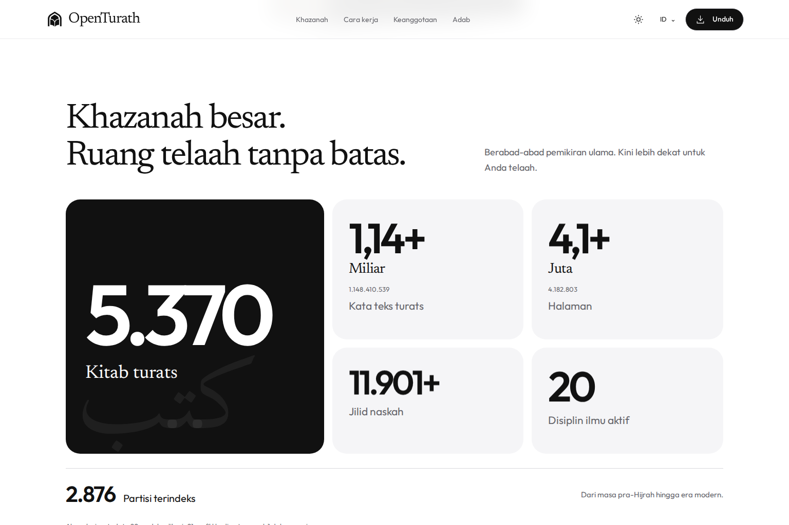
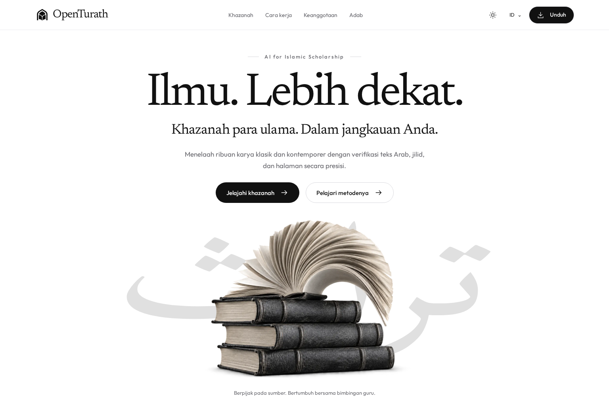

Putih murni. Angka yang berbicara. Telaah yang hidup.
Buka folder proyek melalui terminal. Gunakan Node.js 22+ dan Python 3.10+.
npm run build:release
npm test
npm startLalu buka OpenTurath lokal. Jalankan melalui HTTP agar aset dan halaman terhubung dengan benar.
Audit V6 · Hasil pengujian · Panduan proyek

